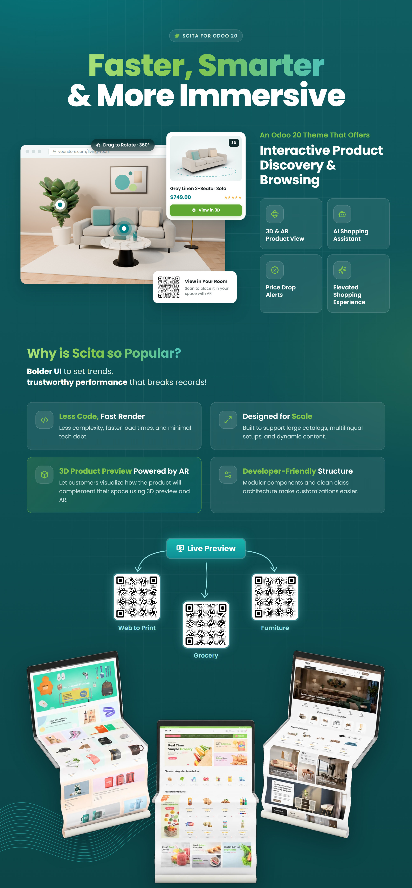
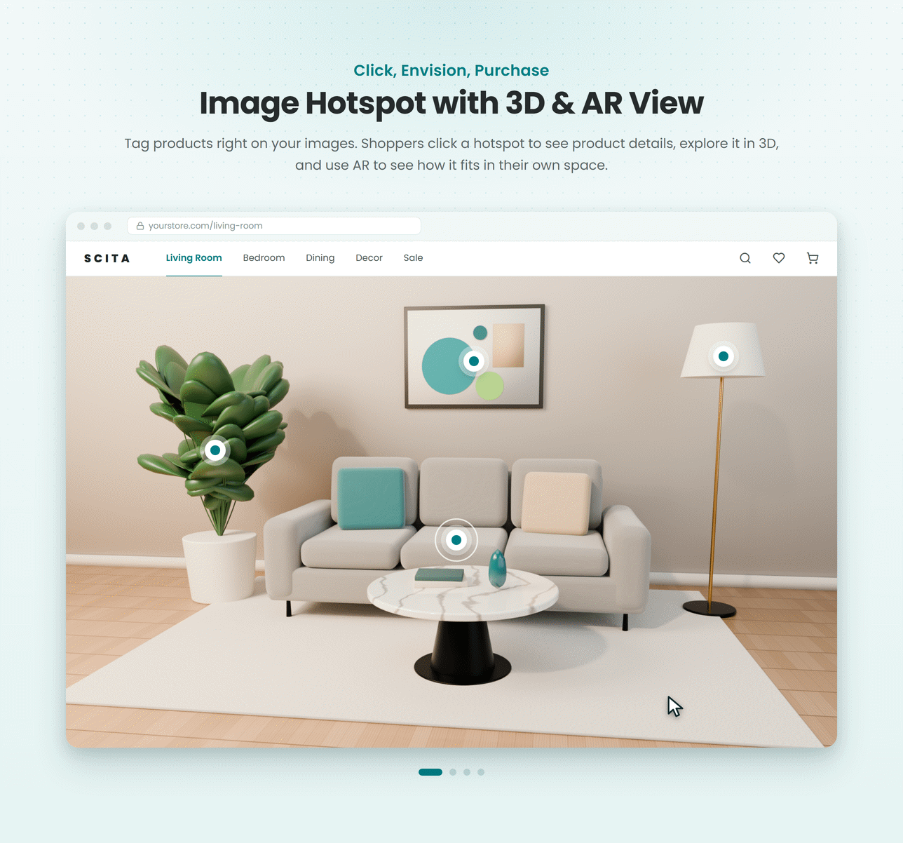
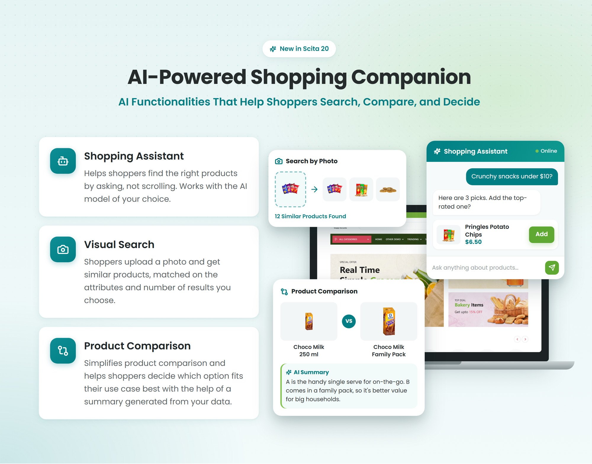
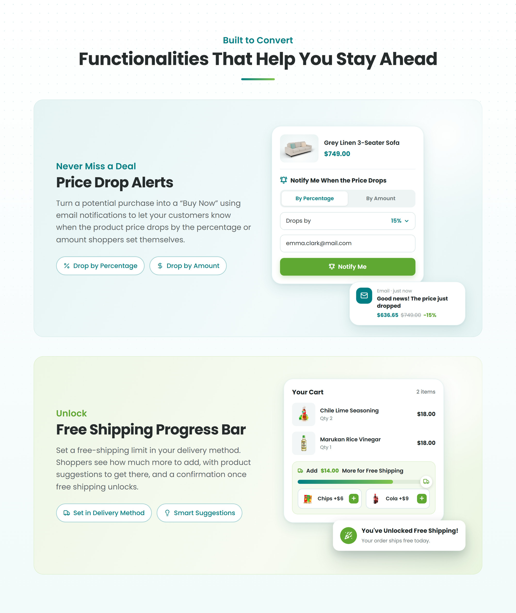
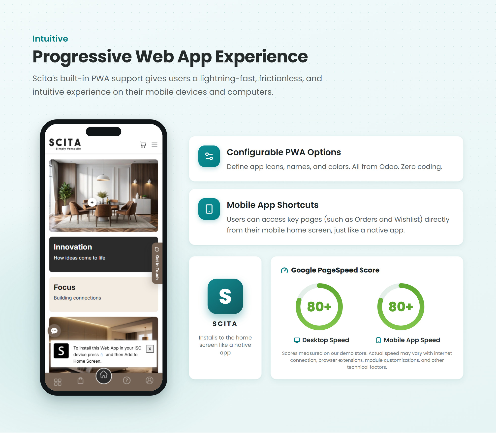
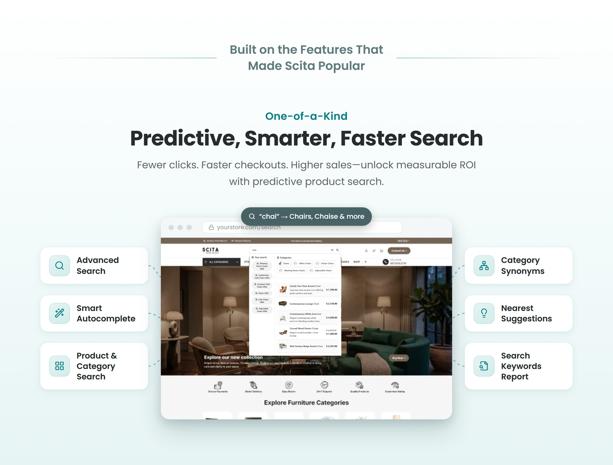
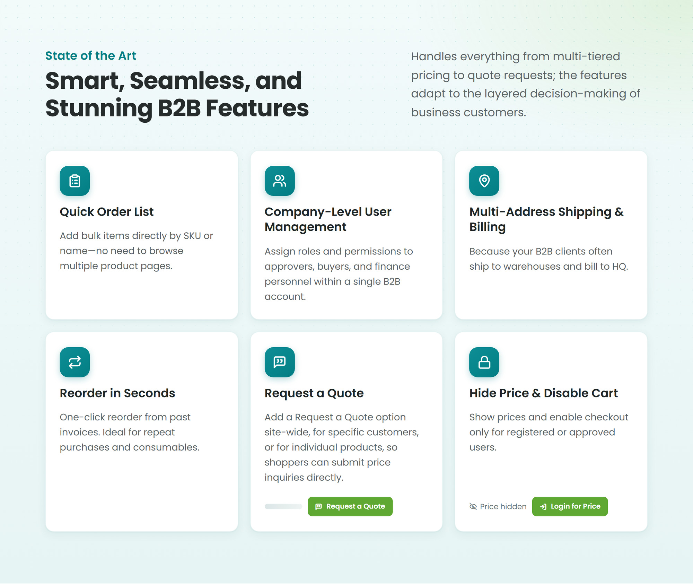
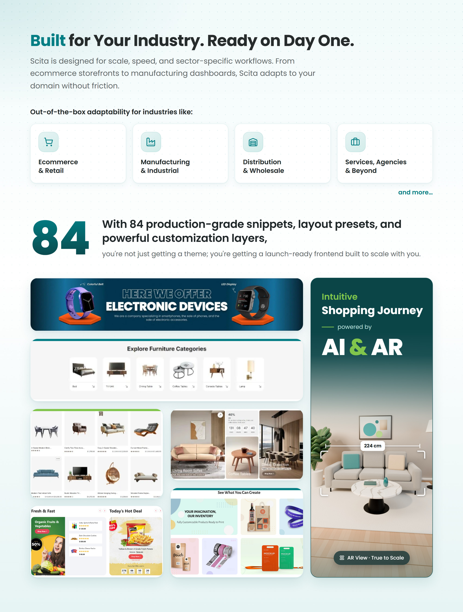
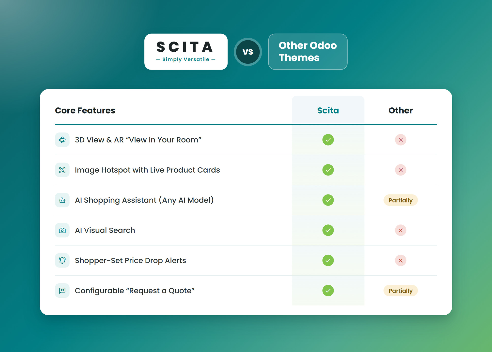
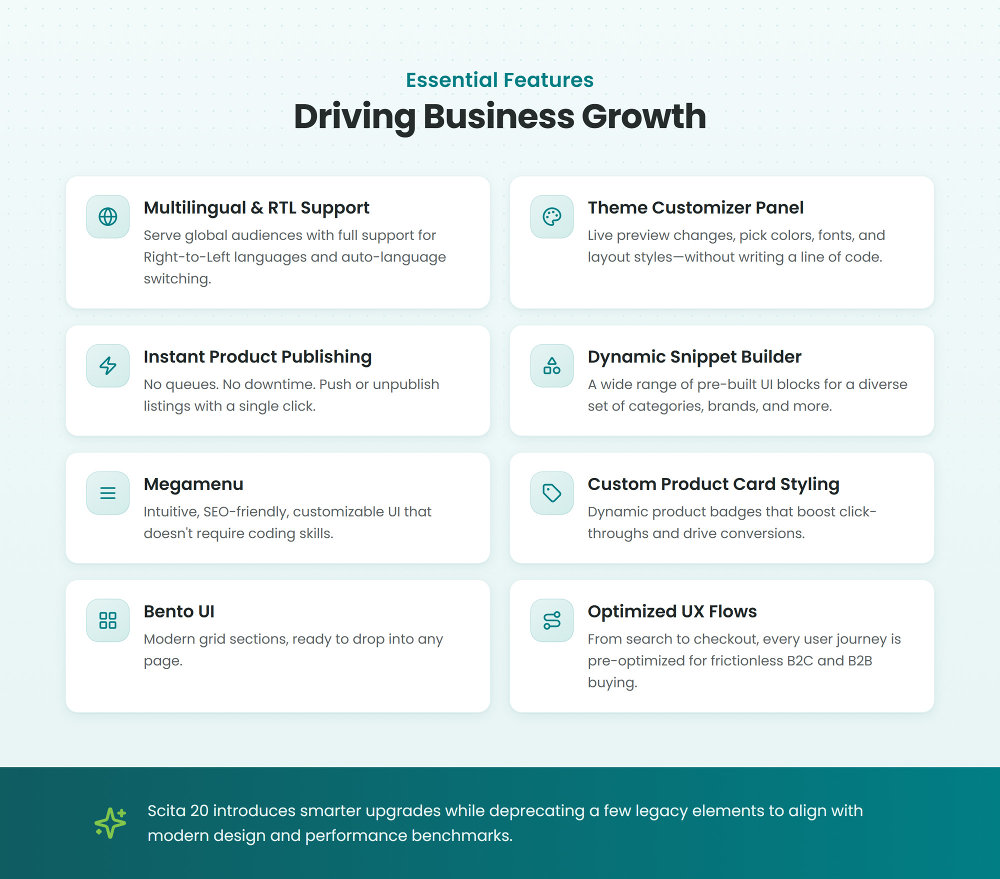

FAQs
Everything you need to know about Scita
Which Odoo version is this theme compatible with?
This theme is compatible with Odoo v18, v19, and v20. In line with Odoo's own support policy, we provide support and updates for the three latest Odoo versions, currently v18, v19, and v20.
Who pays for the AI features, the store owner or the shoppers?
The store owner is charged, based on usage. The AI Shopping Assistant, Visual Search and AI Comparison run on the store owner's own API key from OpenAI, Anthropic or Google Gemini, and the usage is billed directly by the provider. AI usage is not included in the theme price, and no extra charge is added on top. Shoppers are never charged for AI. All AI features stay off until they are switched on, and a daily limit per website and a message limit per visitor can be set to keep costs under control.
On how many Odoo instances can this theme copy be used?
It can be used on only one Odoo instance. To use this theme in multiple instances, you need to purchase the theme multiple times.
What are the support and update policies?
We support the three latest Odoo versions (currently v18, v19, and v20). For full details, please refer to our support policy https://www.appjetty.com/support-policy.htm
Do you have guidelines for installing this theme?
Yes, we have a user guide which includes installation and configuration steps. Please contact our support team at support@appjetty.com
Do you install the theme for us?
Yes, we do install the theme for you. It's quite easy. You just need to purchase the theme along with our installation services & we would be happy to assist you.
Can the theme support languages other than English?
Yes, it is a multilingual theme with RTL support, and it support the language(s) of your choice.
Can you help us customize the theme?
Yes, we offer professional Odoo website and eCommerce customization services. Whether it’s a minor tweak or a full-scale branding overhaul, our development team can make Scita your own. You can share your requirements at support@appjetty.com and we'll get back to you as soon as possible.
Can Scita be tailored to my industry or use case?
Absolutely. Scita’s modular design and snippet builder makes it easy to adapt across industries from ecommerce to services to manufacturing.
Will I be able to add my own CSS to the theme?
Yes, you can create new modules and extend our theme CSS to add all the required changes in that module. Please do not alter the theme CSS directly as it may break the theme design.
Is Scita compatible with Odoo Enterprise and Community?
Yes. Scita works seamlessly with both Odoo Enterprise and Community editions.
Is this theme compatible with Odoo's Multi-Website feature?
Yes, our theme Scita is compatible with Odoo's Multi-Website feature. You can add our theme Scita for multiple websites if they all are on Odoo v18, v19, or v20 but all the websites should be hosted on a single Odoo instance. To apply our theme for multiple websites, you need to have a technical understanding of Odoo.
Can I resell your theme?
No, you can not. Your purchase of the theme only allows your commercial use which means you do not have the rights to resell our theme.
What makes Scita different from other Odoo themes?
Scita is the first theme with Bento UI, featuring less than 3,000 lines of lean code and including 84 snippets, which provide speed, flexibility, and an unmatched user experience.
What kind of support do you offer?
We offer reliable support via email and our ticketing system. You’ll get prompt responses from product experts, not bots.
Changelog
Version 20.0
Release
- Initial release for Odoo 20
- New: 3D & AR product view and Image Hotspot
- New: AI Shopping Assistant, Visual Search and Product Comparison
- New: Price Drop Alerts and Free Shipping Progress Bar
Technical Help, Queries & Support
We offer extremely convenient and quick support for all your technical help & support requests. Our support service is the parameter that defines the success of our business and has earned us our brand name.
support@appjetty.com
Scita 20 introduces smarter upgrades while deprecating a few legacy elements to align with modern design and performance benchmarks.